Namee

Blott Farm Market on RT 422
{kind=link}
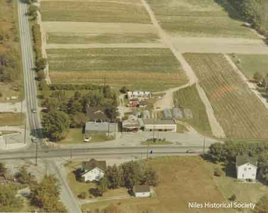
Aerial view, looking east and south, of the intersection of State Route 422 and Niles-Vienna Road taken in 1973.
{kind=link}
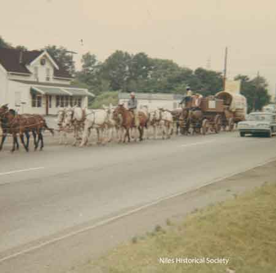
VS
{kind=link}
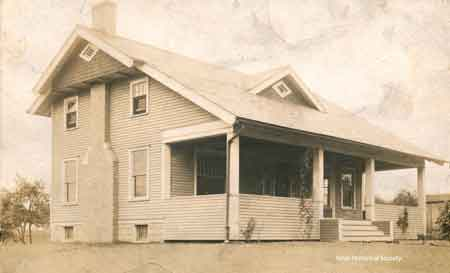
VS
{kind=link}
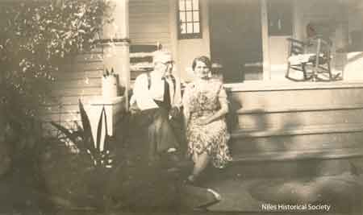
VS
{kind=link}
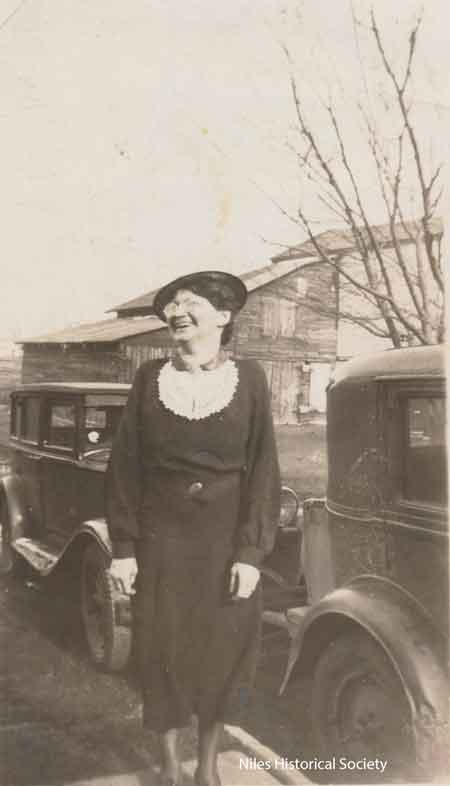
VS

Charles Blott and William Blott, Phyllis’ grandfather and father.

VS
{kind=link}
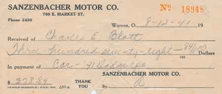
Bill of sale for the Dodge from Sanzenbacher Motors.

Sign in front of market advertised the produce that was in season and available.
{kind=link}
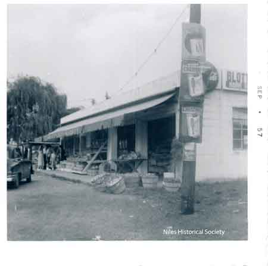
The market was a combination open-air market with many items such as flower baskets sitting on the ground, inside a variety of fruits and vegetables were displayed on tables.

L-R Carol Ann DeMarsh, Phyllis half-sister; Charles Blott; Anne Marie Blott; and Phyllis Blott.
{kind=link}
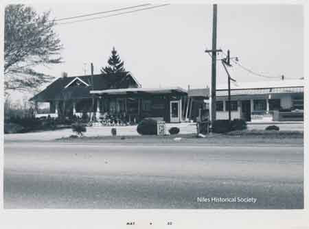
The Blott farmhouse and farm market.
{kind=link}
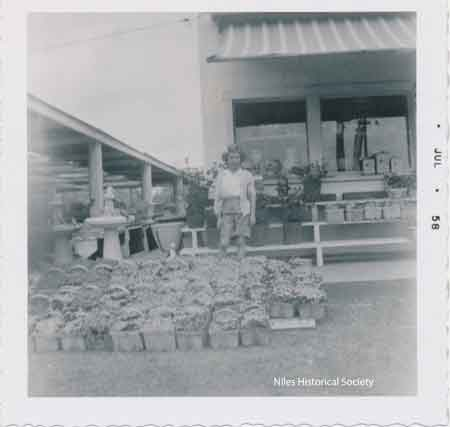
Phyllis Blott Bako in front of flower baskets and statuary for sale at Blott's Farm Market.

View of shaded area where plants for sale were protected from summer sun.

During the off-season, Phyllis' Dad would purchase Christmas trees to be sold. Photo developed March 1957, so this picture would have been taken during the Christmas season of 1957.
View of market in early spring showing statuary and lawn decorations for sale. Produce is still available for sale inside closed part of Blott's Farm Market.

Unidentified child, possibly Phyllis Blott Bako, sitting in her wagon in driveway looking across Niles-Vienna Rd. toward the Blott family home and barn in background.

Phyllis' dad cleaning his boots after working in the barn. In the background is the Blott apple orchard which provided fruit for sale at the market. The car beside him is a 1941 Plymouth and older cars behind him are not identified.

The original farm tractor used on the Blott farm since 1938.
{kind=link}
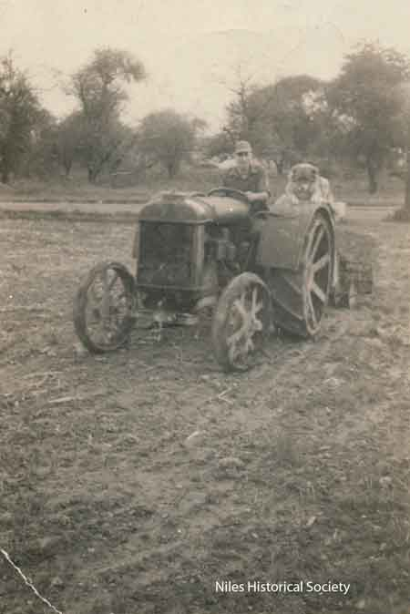
Phyllis' dad on the same tractor with his dog, Shep.
{kind=link}
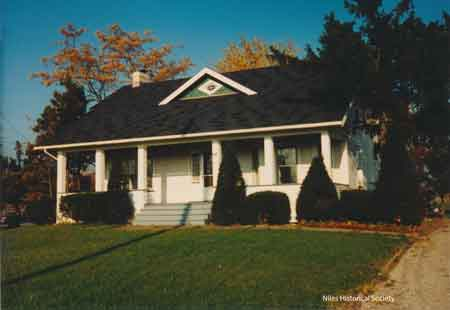
Color photo of Blott farm house.
{kind=link}
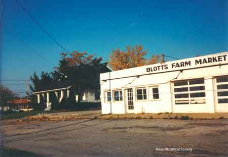
Color photo of Blott's Farm Market and farmhouse.
{kind=link}
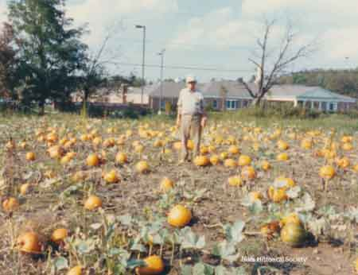
Pumpkin patch provided

Phyllis's Dad feeding the chickens